교통기사 (2004-05-23 기출문제)
1과목: 교통계획
1. 새로운 교통수단의 도입에 따른 교통선호특성을 파악하기 위하여 설정된 가상적인 상황에 대하여 조사하는 방법을 무엇이라 하는가?
- RP(revealed preference)조사
- SP(stated preference)조사
- 패널(panel)조사
- 엑티비티다이어리(Activity daily)조사
(정답률: 67%)

2. 다음 OD표에서 i zone 통행 발생량 Pi을 표시하면?
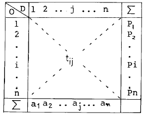
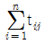
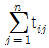
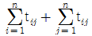
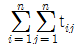
(정답률: 알수없음)
3. 통행배분(Trip Assignment)모형중 정태적 모형에 대한 설명이다. 바르지 못한 것은?
- 고정된 경로비용을 토대로 교통량을 부하한다.
- 최소비용경로 알고리즘을 적용한다.
- 링크교통량이 통행비용에 대해 매우 민감하게 나타난다.
- 다수의 대안적 경로에 교통량이 분산배정된다.
(정답률: 55%)
4. O-D 조사에 사용하는 표본의 크기에 대한 설명중 가장 올바른 것은?
- 표본의 크기가 증가하면 조사 자료의 정확도는 감소한다.
- 표본의 크기가 증가하면 조사 자료의 정확도의 증가율은 점차 감소한다.
- 통행량이 적은 경우 표본의 수를 증가시키면 통행량이 많을 때보다 오차의 범위가 커진다.
- 통행량이 많은 경우 표본율을 증가시키면 오차의 범위가 커진다.
(정답률: 알수없음)
5. 교통조사를 위한 표본추출에서 모집단을 구성하는 각표본 단위의 추출확률이 동등한 표본추출법은?
- 층화확률 표본추출
- 단순확률 표본추출
- 집락확률 표본추출
- 임의확률 표본추출
(정답률: 알수없음)
6. 다음 중 장기교통 계획의 특징이 아닌 것은?
- 소수의 대안
- 교통수요가 비교적 고정
- 시설 지향적
- 서비스 지향적
(정답률: 72%)
7. 평균 운행속도가 20km/h로서 20km의 노선을 운행하는 버스가 60명을 최대로 수송할 수 있다. 배차 간격이 5분인 경우 시간당 최대 승객수는?
- 760명/시간
- 720명/시간
- 550명/시간
- 480명/시간
(정답률: 55%)
8. 통행비용이 가장 적게 소요되는 경로를 택한다는 기본 전제를 이론의 배경으로한 통행배분(traffic assignment)모델은?
- All-or-Nothing Model
- Entropy Model
- Flow-independent Model
- OD pair Model
(정답률: 80%)
9. 통행조사 결과를 검증하거나 보완하기 위해 조사지역내에 하나 혹은 몇개의 선을 그어 이 선을 통과하는 차량을 조사하는 방법을 무엇이라 하는가?
- 교통존(traffic zone)조사
- 폐쇄선(cordon line)조사
- 스크린라인(screen line)조사
- 희망선(desire line)조사
(정답률: 알수없음)
10. 통행유출 모형으로 회귀분석식이 많이 활용된다. 회귀분석방법의 설명변수(독립변수)로 가장 타당한 것은?
- 자동차 보유대수, 존별인구, 가구당 소득수준
- 통행비용, 가장의 연령, 대중교통수단요금
- 주차요금, 주거면적, 고용자수
- 수입, 인구밀도, 도로율
(정답률: 알수없음)
11. 교통 수단선택예측 모형에 자주 쓰이는 중요 변수는 어느 것인가?
- 통행시간
- 죤(zone)의 인구
- 죤(zone)의 크기
- 죤(zone)의 고용자수
(정답률: 알수없음)
12. 통행분포(Trip Distribution)에 속하는 모형은 다음중에서 어느 것인가?
- 회귀분석모형
- 중력모형
- 로짓모형
- All or nothing 모형
(정답률: 77%)
13. 지구분할(Zoning)의 원칙에 관한 설명으로 틀린 것은?
- 존안에 다른존이 포함되지 않아야 한다.
- 존내부의 사회적 경제적 특성이 균일해야 한다.
- 존의 모양은 직사각형에 가까워야 한다.
- 존내부의 통행이 적어야 한다.
(정답률: 알수없음)
14. 도로상에 교통량 측정기기를 설치하여 장기간에 걸쳐 이지점을 지나는 차량대수를 한시간 이하의 단위로 측정하고 이를 기록하는 조사는 무엇인가?
- 상시조사
- 보정조사
- 전역조사
- 교통량조사
(정답률: 알수없음)
15. 교통수요 예측시 가구방문 조사에서 인구규모가 100만 이상의 도시에서 적용되는 일반적인 표본률로서 가장 적합한 것은?
- 10%
- 20%
- 8%
- 4%
(정답률: 알수없음)
16. 요금과 교통수단의 수요에 대하여 조사하여 V1 = 9P1-0.2P20.5와 같은 결과가 나왔다. 버스요금이 10%인상되었을 때 택시수요의 변화율은 얼마인가? (단, V1 : 택시 수요, P1 : 택시요금, P2 : 버스 요금)
- 8%가 감소한다.
- 8%가 증가한다.
- 5%가 감소한다.
- 5%가 증가한다.
(정답률: 알수없음)
17. 다음중 개별행태모형에 대한 설명으로 틀린 것은?
- 개인의 통행행태 관련자료를 활용한다.
- 타존에 적용이 가능하다.
- 모델의 구조는 결정적모형이다.
- 수요추정과정의 통합이 가능하다.
(정답률: 알수없음)
18. 다음 중 TSM대책의 분석,설계 및 평가에서 효과척도(MOE)로 볼 수 없는 요소는?
- 평균첨두속도
- 구간교통량
- 대중교통노선의 승차인원
- 자동차 보유율
(정답률: 알수없음)
19. A와 B의 2존간 현재통행량이 100통행이고 A존의 통행발생량은 현재의 150통행에서 장래 225통행으로, B존의 통행발생량은 현재의 200통행에서 장래 700통행으로 예측될 경우 장래 존 AB간 통행량을 평균인자(성장인자)모형으로 예측한 값은?
- 100
- 200
- 250
- 300
(정답률: 알수없음)
20. 교통수요관리(TDM : Transportation Demand Management)의 적절한 기법으로 볼 수 없는 것은?
- 지하철 노선연장
- 교통혼잡세징수
- 주차시설억제
- 분산출근제
(정답률: 알수없음)
2과목: 교통공학
21. 어떤 특정한 법칙없이 무작위로 십자형교차로에서 한방향에 도착하는 차량의 40%가 좌회전하고 30%는 직진, 나머지는 우회전 한다고 한다. 4대의 차량이 도착했을때 우회전 차량이 1대 이하인 경우의 확률은 얼마인가?
- 0.24
- 0.42
- 0.412
- 0.65
(정답률: 알수없음)
22. 다음 중 계수분포가 아닌 것은?
- Poisson분포
- Binomial분포
- Negative Binomial분포
- Erlang분포
(정답률: 알수없음)
23. 어느 특정구간의 도로교통용량이 6,000대이고 자유통행시간이 1시간 30분이 소요된다고 한다. 이 구간의 교통량이 9,000대가 될 경우의 통행시간을 BPR의 통행량-속도 함수식을 사용하여 구하면?
- 약 1.8 시간
- 약 2.2 시간
- 약 2.4 시간
- 약 2.6 시간
(정답률: 알수없음)
24. 지점속도조사(spot speed study)를 통해서 분석할 수 없는 것은?
- 제한속도의 설정
- 교통표지판 위치설정
- 사고와 속도와의 관계분석
- 교통정체 평가분석
(정답률: 70%)
25. 교통량의 시간적 변화가 심한 독립교차로에 설치하여 단독으로 운용하는데 적합한 신호기는?
- 정주기 신호기
- 교통감응 신호기
- 전자 신호기
- 연동 신호기
(정답률: 알수없음)
26. 고속도로 기본구간의 서비스 수준 중에서 도로의 용량에 가장 접근(V/C가 1에 도달)하는 서비스 수준은?
- 서비스 수준 C
- 서비스 수준 D
- 서비스 수준 E
- 서비스 수준 F
(정답률: 64%)
27. Greenshield의 교통류 모형에 의하는 경우 자유속도(Free Flow Speed)가 90km/시 일 때 용량상태에서의 교통류 속도는 얼마인가?
- 72km/hr
- 63km/hr
- 45km/hr
- 30km/hr
(정답률: 알수없음)
28. 대기행렬이론에서의 단일 서비스기관에 대한 설명이다. 틀린 것은?
- 시스템내의 평균차량대수는 서비스를 받고 있는 평균차량대수이다.
- 평균대기행렬 길이는 시스템 내의 평균차량대수에서 서비스를 받고 있는 차량의 대수를 뺀 값이다.
- 시스템내에 차량이 한 대도 없을 확률P는 1 - 교통강도(traffic intensity)와 같다.
- 시스템내의 평균체류시간은 평균대기시간에서 평균서비스 시간을 합한 값과 같다.
(정답률: 알수없음)
29. 한 지점에서의 피크(Peak)시간 교통량이 2,800대 이었고 15분 피크(Peak)교통량이 800대이면 이 지점에서의 Peak Hour Factor는 얼마인가?
- 0.88
- 1.14
- 0.29
- 3.50
(정답률: 20%)
30. 어느 도로에 시간당 360대의 교통량이 있을 경우 차두 간격이 1초 이상될 확률을 구하면?
- 0.670
- 0.740
- 0.818
- 0.9⑤
(정답률: 알수없음)
31. 도시내의 도로에 대한 시간당 평균 차두간격이 3초였다면 시간당 교통량은 얼마인가?
- 600 대/시간
- 1,200 대/시간
- 1,800 대/시간
- 2,400 대/시간
(정답률: 알수없음)
32. 교통류(traffic flow)의 특성을 결정하는 주요 요소가 아닌 것은?
- 차두시간 및 차간시간
- 차량가속도
- 속도 및 통행시간
- 밀도
(정답률: 80%)
33. 다음중 신호교차로의 포화교통량 산정을 위한 이상적인 조건에 해당하지 않는 것은?
- 차로폭 3.0m 이상
- 교통류는 모두 승용차로만 구성
- 구배가 0%
- 교차로 부근 100m 이내에 버스정류장이 없을 것
(정답률: 알수없음)
34. 연속된 신호교차로에서 첫 번째 신호등의 녹색신호시작시간과 두 번째 신호등의 녹색신호시작시간과의 시간간격을 의미하는 것은?
- 현시 (phase)
- 분할비 (split)
- 유효녹색시간 (effective green time)
- 옵셋 (offset)
(정답률: 알수없음)
35. 교통류를 분석하기 위한 목적으로 수집되는 자료 중 직접적으로 가장 측정하기 어려운 것은?
- 속도조사
- 지체조사
- 통행시간조사
- 밀도조사
(정답률: 알수없음)
36. 다음 중 도로의 구조· 시설기준에 관한 규칙에 의한 설계기준자동차의 구분에 해당되지 않는 자동차는?
- 소형자동차
- 중형자동차
- 대형자동차
- 세미트레일러
(정답률: 알수없음)
37. 도로상의 일정구간을 주행하는 교통류가 3가지 종류의 차량으로 구분될 수 있다. 즉 30km/시로 주행하는 차량들, 40km/시로 주행하는 차량들, 50km/시로 주행하는 차량들로 구분된다. 각각의 속도로 주행하는 차량들의 밀도가 각각 50대/km, 40대/km, 20대/km일 때 전체 교통류의 공간 평균속도는?
- 34.2 km/시
- 36.6 km/시
- 37.3 km/시
- 41.8 km/시
(정답률: 알수없음)
38. 새로운 도로를 건설하기 위하여 기존 도로의 교통량을 조사한 결과 1000(대/일) 정도였다. 매년 전년도에 비해 10% 정도 교통량이 증가한다고 할 때 20년 후의 계획 교통량은 어느 정도인가?
- 6730(대/일)
- 7230(대/일)
- 7840(대/일)
- 8120(대/일)
(정답률: 알수없음)
39. 도로의 일정구간을 주행하는 각 차량들의 속도가 동일하지 않은 경우 공간평균속도와 시간평균속도와의 관계를 옳게 설명한 것은?
- 공간평균속도와 시간평균속도는 같다.
- 공간평균속도가 시간평균속도보다 작다.
- 공간평균속도가 시간평균속도보다 크다.
- 공간평균속도와 시간평균속도는 비교할 수 없다.
(정답률: 50%)
40. 교차로의 신호운영 방법중 좌회전과 직진의 동시 신호와 분리 신호를 설명한 것중 틀린 것은?
- 동시 신호로 할 경우 차선을 공유 할 수 있다.
- 원칙적으로 교차로 용량에는 큰 차이가 없다.
- 동시 신호는 좌회전 교통량이 직진에 비해 현저히 적을때 유리 하다.
- 분리신호와 동시신호는 교차로와 교통특성에 따라 선택한다.
(정답률: 알수없음)
3과목: 교통시설
41. 고속도로의 설계속도가 100km/h일 때 버스정류장의 최소 길이는?
- 520m
- 470m
- 420m
- 310m
(정답률: 알수없음)
42. 아스팔트 포장의 감온성(temperature susceptibility)에 관한 설명으로 옳지 않은 것은?
- 아스팔트의 점성이 온도에 따라 변화하는 것을 말한다.
- 여름에 바퀴자국패임(rutting)의 가능성이 커지며 겨울철에 균열의 가능성이 커진다.
- 감온성을 줄이기 위해서는 비교적 점도가 큰 아스팔트를 쓰는 것이 좋다.
- 근래 많이 사용되는 개질 아스팔트 중에는 아스팔트의 감온성을 줄이기 위한 것들이 많다.
(정답률: 알수없음)
43. 갓길(길어깨)의 일부분으로서 차도와 같은 두께로 포장을 실시하여 노면표시 또는 포장의 착색으로 명시하고 차량의 주행에 있어서 측방여유 확보이외에 운전자의 시선유도 기능도 갖는 것은?
- 측대
- 교통섬
- 분리대
- 연결로
(정답률: 알수없음)
44. 트럼펫형 인터체인지에서 루프형 연결로에 관한 사항 중 틀린 것은?
- 설계속도는 50km/h가 이상적이다.
- 교통량이 적은 쪽의 연결로를 루프형으로 한다.
- 루프와 준직결 연결로의 교통량이 큰 차이가 없으면 유출연결로를 루프형으로 한다.
- 유출연결로가 루프형일 경우 본선이 고가차도(over pass) 형식으로 하는 것이 유리하다.
(정답률: 54%)
45. 아래 도표는 각 도로의 접근성과 이동성의 관계를 나타낸 것이다. ① - ⑤번까지의 순서를 바르게 열거한 것은?
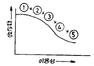
- ① 고속도로, ② 주간선도로, ③ 보조간선도로, ④ 국지도로, ⑤ 구획도로
- ① 지방도, ② 군도, ③ 시도, ④ 국도, ⑤ 고속도로
- ① 국지도로, ② 집산도로, ③ 보조간선도로, ④ 주간선도로, ⑤ 고속도로
- ① 고속화도로, ② 광로, ③ 대로, ④ 중로, ⑤ 소로
(정답률: 46%)
46. 교통섬을 설치시 고려할 사항 중 맞지 않는 것은?
- 시야가 확보되지 않거나 곡선이 급한 지점에 반드시 설치하여야 한다.
- 위험한 교통흐름을 제어하고 안전한 주행속도를 유지하여야 한다.
- 교통관제시설을 설치할 수 있는 적당한 크기의 공간을 확보하여야 한다.
- 교통흐름을 명확히 분리해야 하나 설치회수를 가급적 최소화하여야 한다.
(정답률: 알수없음)
47. 도로의 직선부와 원곡선부 사이에 완화곡선으로 클로소이드(Clothoid)곡선을 사용하는 경우, 클로소이드 파라메타(A)는 안전을 고려하여 일정한 값 사이로 설계해야 하는데, 만약 원곡선반경이 400 m인 원곡선부와 접속되는 클로소이드 파라메타의 최대값은?
- 133
- 200
- 400
- 600
(정답률: 알수없음)
48. 설계속도는 구배, 시거등의 도로 기하구조에 중대한 영향을 미치는 것으로서 도로유형별로 설계속도를 달리한다. 도시지역의 주간선도로에서의 설계속도는 얼마인가?
- 120km/hr 이상
- 100km/hr 이상
- 80km/hr 이상
- 60km/hr 이상
(정답률: 64%)
49. 도로에 시선유도 표지를 설치할 경우에 대한 설명으로 옳지 않은 것은?
- 교통량이 많은 곳에 설치한다.
- 야간 주행의 안전성 및 원활성이 요청되는 곳에 설치한다.
- 차로수나 차로폭이 급격히 변화하는 구간에 설치한다
- 도로의 선형이 급격히 변화하는 구간에 설치한다.
(정답률: 46%)
50. 고속도로에서 우측길어깨(갓길)의 폭원이 최대 얼마 미만일 경우 비상주차대를 설치해야 하는가?
- 1.5m
- 2.0m
- 2.5m
- 3.0m
(정답률: 알수없음)
51. 다음 조건에 해당하는 주차 수요는 몇 대인가?
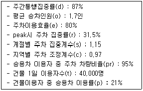
- 974대
- 1,457대
- 1,693대
- 1,794대
(정답률: 알수없음)
52. 불완전 입체교차의 형식으로서 용지가 적게 들고 교통의 우회거리도 짧으며 도시부 도로의 교차에 많이 적용되나 교차로와의 연결로 접속부분에서 생기는 평면교차부에서 병목현상이 발생하기 쉬운 교차로는?
- 불완전클로버형
- 준직결형
- 트럼펫형(4갈래)
- 다이아몬드형
(정답률: 알수없음)
53. 도로곡선부 설계시 편경사(편구배)값의 상한을 제한하는 이유는?
- 정지 또는 저속 주행시 차량이 미끄러져 내려 오는 것을 방지하기 위하여
- 공사의 어려움 때문에
- 곡선반경을 무한정 크게할 수 없으므로
- 설계속도를 너무 높게 책정할 필요가 없으므로
(정답률: 알수없음)
54. 감속차로의 형식중 직접식인 경우 규정된 표준길이는?
- 테이퍼 부분을 포함하여 분류단 노즈까지의 길이
- 테이퍼 부분을 포함하여 분류단 노면표시로 표시된 곳까지의 길이
- 테이퍼 부분 중 한 차로폭이 확보된 부분부터 분류단 노즈까지의 길이
- 테이퍼 부분 중 한 차로폭이 확보된 부분부터 분류단 노면표시로 표시된 곳까지의 길이
(정답률: 알수없음)
55. 도시지역 도로의 편경사(편구배) 최대값으로 옳은 것은?
- 4%
- 6%
- 8%
- 10%
(정답률: 알수없음)
56. 설계속도가 90㎞/hr 인 도로의 곡선부에서 운전자가 핸들(Handle)의 조작에 곤란을 느끼지 않고 주행할 수 있는 최소 평면곡선의 길이는?
- 100m
- 130m
- 140m
- 170m
(정답률: 알수없음)
57. 도시지역 간선도로 보도의 최소 폭으로 옳은 것은?
- 4.0m
- 3.0m
- 2.25m
- 1.5m
(정답률: 알수없음)
58. 오르막 차로의 설계에서 차로의 길이를 결정할 때 가장 중요한 사항은?
- 트럭의 평균속도
- 트럭의 설계속도
- 트럭 혼합율
- 트럭속도의 감속정도
(정답률: 30%)
59. 평면교차로에서 좌회전 차로를 설치하고자 할때 차로 테이퍼에 관한 설명으로 틀린 것은?
- 차로 테이퍼는 좌회전 교통류를 직진차로에서 좌회전 차로로 유도하는 기능을 갖는다.
- 테이퍼 설치시에는 좌회전 차량이 좌회전 차로로 진입할 때 갑작스러운 차로변경을 유발하지 않도록 하여야 한다.
- 테이퍼 설치시에는 좌회전 차량이 좌회전 차로로 진입할 때 무리한 감속을 유발하지 않도록 하여야 한다.
- 가급적 테이퍼를 완만하게 하여 운전자들이 직진차로와의 차이를 느끼지 않도록 하여야 한다.
(정답률: 알수없음)
60. 자주식주차장으로서 지하식 또는 건축물식에 의한 노외주차장과 기계식 주차장으로서 자동차용 승강기로 주차하고자 하는 층까지 운반된 자동차가 주차 구획까지 자주식으로 들어가는 노외주차장의 차로에 관한 설명 중 옳은 것은?(오류 신고가 접수된 문제입니다. 반드시 정답과 해설을 확인하시기 바랍니다.)
- 높이는 주차 바닥면으로부터 2.0m이상으로 한다.
- 굴곡부는 자동차가 5.0m 이상의 내변 반경으로 회전이 가능하도록 하여야 한다.
- 경사로의 차로 너비는 직선형인 경우 3.0m 이상으로 한다.
- 경사로의 종단구배는 직선부에서 19%를 초과하여서는 안된다.
(정답률: 알수없음)
4과목: 도시계획개론
61. 지리정보시스템(GIS)을 설명하는 것 중 가장 거리가 먼 것은?
- 지형자료가 점, 선, 면의 형태로 이루어져 있다.
- 데이터베이스 처리기능을 갖고 있다.
- 조사, 분석할 수 있는 문제는 위치 조건, 추세, 경로 패턴, 모형 등이다.
- 속성자료는 3차원의 화상으로 이루어져 있다.
(정답률: 알수없음)
62. 간선도로 및 보조간선도로의 유형에 속하지 않는 가로망 형태는?
- 격자형
- 방사형
- 격자방상형
- 쿨데삭(cul-de-sac)
(정답률: 알수없음)
63. 도시가 인간정주사회의 한 공간 단위로 생각하고 15단계의 인간정주사회를 제안한 사람은?
- 게데스(Patrick Geddes)
- 독시아디스(C.A.Doxiadis)
- 케빈린치(Kevin Lynch)
- 레이먼드어닌(Raymond Unwin)
(정답률: 58%)
64. 라우리 모형(Lowry Model)의 적용에 있어서 공간구조를 분류하는 항목이 아닌 것은?
- 기반부문(Basic Sector)
- 상업부문(Service Sector)
- 가계부문(Household sector)
- 환경부문(Environmental Sector)
(정답률: 30%)
65. 『몇개의 도시가 서로 영향을 미칠 거리에 위치한다. 이들 도시는 기능적으로 깊은 상관성을 가지고 하나의 군을 형성하는 지역이다.』에 적합한 용어는?
- 콘너베이션(conurbation)
- 메갈로폴리스(megalopolis)
- 메트로폴리스(metropolis)
- 위성도시(satellite city)
(정답률: 알수없음)
66. 현행 국토의계획및이용에관한법률에 의한 기반시설의 대분류 중 교통시설에 해당되지 않는 것은?
- 주차장
- 삭도
- 광장
- 운하
(정답률: 알수없음)
67. 도로의 분류중 일반도로가 아닌 것은?
- 고속도로
- 국지도로
- 집산도로
- 보조간선도로
(정답률: 알수없음)
68. 보차분리기법에는 평면분리방식, 입체분리방식, 시간분리방식 등이 있다. 다음 중 평면분리방식에 해당되지 않는 것은?
- 보도
- 아케이드
- 보행자전용도로
- 보행자데크
(정답률: 25%)
69. 도시구성의 3대 물리적 요소가 아닌 것은 무엇인가?
- 밀도
- 배치
- 동선
- 정비
(정답률: 64%)
70. H.Hoyt의 선형이론(Sector Theory)에서 그림의 제 3구역은?
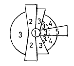
- 중심지구
- 도매 경공업 지구
- 저소득층 주택지
- 고소득층 주택지
(정답률: 알수없음)
71. 장래의 도시인구를 예측하는데 있어서 과거추세에 의한 예측방법이 아닌 것은?
- 등차급수법
- 최소자승법
- 집단생잔법
- 지수함수법
(정답률: 알수없음)
72. 토지이용계획에 있어서의 공공이익의 요소로서 부적절한 것은 다음 중 어느 것인가?
- 안전성
- 자유성
- 편의성
- 쾌적성
(정답률: 60%)
73. 도시계획 과정에 있어서 시민참여의 효과로 보기 어려운 항목은?
- 집단의사에 의한 개인의 형태 변화 추구
- 공동체 권력의 축소
- 계획요원의 전문지식을 보완하는 효과
- 동조자 확보효과
(정답률: 43%)
74. 보행으로 중심부와 연결이 가능하며, 초등학교, 상가 등의 공동서비스 시설을 공유하는 규모로서 주민간의 동질성이 강조되는 계획적 공간범위는?
- 인보구
- 근린분구
- 근린주구
- 지역공동체
(정답률: 알수없음)
75. 토지이용 또는 토지개발은 교통수요를 유발하는 요인이며, 교통은 토지이용에 영향을 주는 물리적· 경제적 요인임을 잘 보여주고 있다. 즉 토지이용이 교통에 미치는 영향은 교통수요로 측정되는데 비해, 교통이 토지이용에 미치는 영향은 어떠한 특성으로 표현되는가?
- 접근성
- 경제성
- 합리성
- 복잡성
(정답률: 알수없음)
76. 격자형 가로망에 대한 설명으로 틀린 것은?
- 지형이 평탄한 도시에 적합하다.
- 도로기능의 다양성이 결여되기 쉽다.
- 고대 및 중세 봉건도시에서 흔히 볼 수 있다.
- 중심지를 기점으로 간선도로를 따라 도시개발축이 형성된다.
(정답률: 알수없음)
77. 하워드(E. Howard)의 전원도시 이론에 대한 설명중 틀린 것은?
- 인구는 32,000~58,000명에 한 한다.
- 전원적 성격을 유지하기 위하여 공업기능을 배제한다
- 토지 투기를 막기 위하여 토지는 영구히 공유화 한다
- 도시주위에 넓은 농업지대 및 녹지대를 가져야 한다.
(정답률: 알수없음)
78. 건축연면적 10,000m2, 건축면적 1,000m2, 주차장면적 1,000m2, 대지면적 1,500m2일 때 용적률과 건폐율은?
- 용적율 100%, 건폐율 10%
- 용적율 150%, 건폐율 66.7%
- 용적율 667%, 건폐율 66.7%
- 용적율 667%, 건폐율 10%
(정답률: 알수없음)
79. 다음 중 용도지역으로 분류되지 않는 것은?
- 주거지역
- 풍치지역
- 상업지역
- 녹지지역
(정답률: 40%)
80. 도시계획과정에서 비용편익분석 또는 비용효과분석을 시행하는 단계는?
- 목표의 설정
- 상황의 분석 및 미래의 예측
- 대안의 설정 및 평가
- 집행
(정답률: 알수없음)
5과목: 교통관계법규
81. 시설물의 부지인근에 부설주차장을 설치하고자 할때 부설주차장 설치계획서에 첨부할 서류로 옳지 않은 것은?
- 토지등기부등본
- 공사설계도서
- 시설물의 부지와 주차장 설치부지를 포함한 지역의 토지이용 상황을 판단할 수 있는 축적 1/1200 이상의 지형도
- 5명 이상의 인근주민 동의서
(정답률: 알수없음)
82. 최초로 수립하는 도시교통정비기본계획 및 중기계획은 당해지역이 도시교통정비지역으로 포함된 날로부터 얼마 이내에 확정· 고시하여야 하는가?
- 1년
- 2년
- 3년
- 4년
(정답률: 42%)
83. ( ) 속의 수치는?
- 3
- 3.5
- 4
- 4.5
(정답률: 알수없음)
84. 도로의 구분에 있어서 도시지역과 지방지역을 구체적으로 구분할때 사용하는 지표는 인구의 규모로서 도시지역은 몇 명이상 거주하는 지역을 대상으로 하는가?
- 3000명
- 5000명
- 7000명
- 10000명
(정답률: 46%)
85. 도로교통법상의 도로의 정의와 다른 것은?
- 도로법에 의한 도로
- 유료도로법에 의한 유료도로
- 일반 교통에 사용되는 모든 도로
- 일반 교통에 사용되는 모든 시설
(정답률: 알수없음)
86. 도로법에서 규정된 도로의 종류로서 옳지 않은 것은?
- 특별시도(特別市道)
- 유료도로(有料道路)
- 지방도(地方道)
- 시도(市道)
(정답률: 알수없음)
87. 다음 영향평가분야별 관계중앙행정기관이 틀린 것은?
- 환경영향평가분야 - 환경부
- 교통영향평가분야 - 건설교통부
- 재해영향평가분야 - 건설교통부
- 인구영향평가분야 - 건설교통부
(정답률: 46%)
88. 다음 중 도로에서 일어나는 교통상의 모든 위험과 장해를 방지· 제거하여 안전하고 원활한 교통을 확보함을 목적으로 제정된 법규는?
- 교통안전법
- 도로법
- 도시교통정비촉진법
- 도로교통법
(정답률: 46%)
89. 서울특별시에 있는 도로원표의 위치는 어디에 있는가?
- 세종로광장의 중앙
- 시청앞광장의 중앙
- 서울역광장 중앙
- 여의도광장 중앙
(정답률: 알수없음)
90. 도로정책심의회의 위원장은 다음중 누가 되는가?
- 도지사
- 건설교통부장관
- 지방국토관리청장
- 건설교통부차관
(정답률: 알수없음)
91. 광역도시계획의 수립권자로 적합하지 않는 것은?
- 광역계획권이 같은 도의 관할 구역에 속하여 있는 경우에는 관할도지사가 수립
- 관할계획권이 2이상의 특별시, 광역시 또는 도의 관할구역에 걸치는 경우에는 해당구역에 대해서만 관할도지사가 수립
- 광역계획권을 지정한 날부터 3년이 경과될 때까지 시·도지사로부터 승인신청이 없는 경우에는 건설교통부장관이 수립
- 시·도지사가 요청이 있는 경우 및 그 밖에 필요하다고 인정되는 때에는 시·도지사와 공동으로 건설교통부장관이 수립
(정답률: 알수없음)
92. 교통안전기본계획은 몇 년을 단위로 수립하는가?
- 5년
- 10년
- 15년
- 20년
(정답률: 알수없음)
93. 교통안전에 필요한 주의, 규제, 지시등을 표시하는 표지판 또는 도로의 바닥에 표시하는 기호나 문자 또는 선 등을 무엇이라 하는가?
- 안전표지
- 교통신호
- 교통안내
- 교통지시
(정답률: 37%)
94. 도시기본계획의 내용으로 부적절한 것은?
- 도심 및 주거환경의 정비·보전에 관한 사항
- 도시의 경제·산업·사회·문화의 개발 및 진흥에 관한 사항
- 도시의 교통영향을 미치는 유발시설물의 관리에 관한 사항
- 도시의 방재 및 안전에 관한 사항
(정답률: 알수없음)
95. 특별시장, 광역시장, 시장· 군수 또는 구청장은 주차장의 효율적인 설치 및 관리운영을 위하여 주차장 특별회계를 설치할 수 있는데 그 재원에 해당되지 않는 것은?
- 노상주차장 설치를 위한 비용의 납부금
- 당해 지방자치단체의 일반회계로부터 전입금
- 정부의 보조금
- 도로교통법 규정에 의한 과태료의 징수금
(정답률: 알수없음)
96. 신호등의 성능에 관한 아래의 설명에서 ( )안에 알맞은 것은? (순서대로 ①, ②)
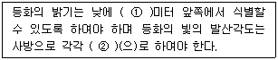
- 120, 45도 이내
- 130, 45도 이내
- 140, 45도 이상
- 150, 45도 이상
(정답률: 알수없음)
97. 도로법의 목적이 아닌 것은?
- 도로의 시설기준
- 도로의 관리
- 도로의 노선지정
- 도로교통의 운영
(정답률: 알수없음)
98. 도로를 통행할 때 긴급자동차외의 자동차 상호간의 통행우선순위는 무엇을 기준으로 결정되나?
- 행정자치부령이 정하는 지정속도
- 행정자치부령이 정하는 최고속도
- 행정자치부령이 정하는 안전속도
- 행정자치부령이 정하는 최저속도
(정답률: 30%)
99. 도시교통정비촉진법상 혼잡통행료 부과지역으로 지정할 수 있는 기준으로 잘못된 것은?
- 공휴일을 제외한 평일의 평균통행속도가 30km이하인 상태가 하루 3회이상 발생하는 편도 4차로이상의 도시고속도로
- 공휴일을 제외한 평일의 평균통행속도가 20km이하인 상태가 하루 3회이상 발생하는 편도 3차로이하의 간선도로
- 공휴일을 제외한 평일의 평균제어지체시간이 100초 이하인 상태가 하루 3회이상 발생하는 신호교차로
- 공휴일을 제외한 평일의 평균운영지체시간이 50초 이하인 상태가 하루 3회이상 발생하는 무신호교차로
(정답률: 10%)
100. 주차전용건축물이라 함은 건축물의 연면적중 주차장으로 사용되는 부분의 비율이 몇 %이상인 것을 말하는가?
- 100%
- 95%
- 90%
- 85%
(정답률: 64%)
6과목: 교통안전
101. 곡선반경 150m인 도로구간에서 편주현상이 일어나 차량이 전복되는 사고가 발생하였다. 편구배 4%, 횡방향 마찰계수가 0.4일 때 편주흔의 곡선반경을 측정할 수 없었다면 이 차량은 최소 얼마의 속도로 주행했겠는가?
- 75.6㎞/시
- 87.4㎞/시
- 91.6㎞/시
- 96.7㎞/시
(정답률: 알수없음)
102. 교통사고를 예방 또는 그로 인한 피해를 경감시키기 위한 대책 중 3E와 관계가 가장 먼 것은?
- Education
- Enforcement
- Environment
- Engineering
(정답률: 알수없음)
103. 다음 중 사고지점도에 대한 기술내용 중 적절치 않은 것은?
- 사고가 집중적으로 발생하는 지점의 신속한 시각적 색인을 제공한다.
- 지도상에 핀, 색종이를 붙이거나 표시를 하여 사고지점을 나타낸다.
- 도시부에서는 축척 1 : 3000, 지방부에서는 1 : 50000을 사용한다.
- 사고지점도는 통상 연단위로 관리된다.
(정답률: 알수없음)
104. 사고연구를 위해 얼마만한 연장이 한 구간으로 설정 되어야 하는가와 관련된 표준 구간장으로 가장 적합한 것은?
- 도시지역 : 0.1km, 지방부 : 1km
- 도시지역 : 0.2km, 지방부 : 2km
- 도시지역 : 0.5km, 지방부 : 3km
- 도시지역 : 0.5km, 지방부 : 5km
(정답률: 알수없음)
1⑤. 젖은 노상에서 시속 86km/h, 마찰계수 f=0.30일 때 정지시거는? (단, 반응시간은 2.5 sec이다.)
- 64m
- 100m
- 157m
- 314m
(정답률: 19%)
106. 신호등의 황색시간 길이는 교차로의 교통안전을 위하여 매우 중요하다. 도로의 폭(교차로 횡단 거리) W = 22m, 접근속도 V = 54km/h, 진입차량의 임계감속도 a=5m/sec2 라고 할 때 황색 시간은 다음 중 얼마가 적당한가? (단, 운전자 반응시간 1초, 차량길이 5m임)
- 2.3초
- 3.3초
- 4.3초
- 6.9초
(정답률: 알수없음)
107. 교통사고 조사 목적중에서 그 지향하는 바가 가장 단편적인 것은?
- 사고 감소
- 사고원인 규명
- 사고특성 규명
- 과실자의 판단
(정답률: 알수없음)
108. 다음 중 차량의 미끄럼 흔적에 대한 설명중 틀린 것은?
- 양후륜의 미끄럼 흔적들 모두가 전륜의 미끄럼 흔적을 벗어나지 않으면 직선미끄럼으로 간주 한다.
- 직선미끄럼 거리는 당해 차량의 모든 바퀴들의 미끄럼 흔적중 가장 긴 미끄럼 길이로 한다.
- 두개의 타이어를 가진 바퀴의 미끄럼 거리는 두 타이어의 미끄럼 흔적의 평균거리로 한다.
- 양후륜의 미끄럼 흔적들이 전륜의 미끄럼흔적의 어느 한쪽을 벗어나면 곡선의 미끄럼으로 간주한다.
(정답률: 55%)
109. 앞지르기 시거의 계산에서 앞지르기 완료한 경우의 앞지르기한 차량과 대향차량과의 간격은 다음 중 어느것을 적용하는가?
- 15~70m
- 75~130m
- 130~160m
- 165~230m
(정답률: 알수없음)
110. 충돌도(collision diagram)에 관한 다음의 설명 중 옳지 않는 것은?
- 화살표와 기호로 사고에 관련된 사항을 도식적으로 나타낸다.
- 요구되는 예방책을 결정하기 위한 사고의 패턴을 연구하기위해 사용된다.
- 충돌도는 반드시 축척에 맞추어 작성되어야 한다.
- 충돌도에는 충돌의 원인이 되는 차로와 다른 물리적인 것 들이 나타나야 한다.
(정답률: 73%)
111. 운전자가 위험상태를 발견하고 브레이크를 밟아야 하겠다고 판단하면서부터 브레이크 페달을 밟아 브레이크가 작동하기까지 주행한 거리는?
- 주행거리(走行距離)
- 정지거리(停止距離)
- 제동거리(制動距離)
- 공주거리(空走距離)
(정답률: 50%)
112. 어느 사고다발지점에 대해 개선사업을 실시한 경우 운전자가 변화된 도로환경에 따라 전보다 주의력을 감소시킴으로써 당초 의도한 개선대책의 효과를 상쇄시키는 경향이 있다. 이러한 경향은 무슨 현상 때문인가?
- 평균으로의 회귀효과(Regression to Mean Effect)
- 위험보정 (Risk Compensation)
- 사고이동(Accident Migration)
- 주관적위험(Subjective Risk)
(정답률: 알수없음)
113. 차로를 이탈한 차량이 도로주변의 고정장애물에 충돌하여 사고가 발생하는 경우 이런 사고의 예방을 위해 설치해야할 교통안전 시설은?
- 과속방지시설
- 시선유도표지
- 방호울타리
- 충격흡수시설
(정답률: 알수없음)
114. 교통표지의 지주설치 위치로 우선순위가 가장 낮은 것은?
- 기존의 교량이나 차도육교 구조물상
- 충격완화시설과 함께 노면 가장 자리에 가까운 노변
- 기존방호책의 뒤나 방호책과 일체가 되게
- 차로의 오른쪽으로 차량의 진입이 드문 곳
(정답률: 37%)
115. 3번 국도의 어느 10km 구간에서 작년 한해동안의 교통사고 발생건수가 56건이었으며, 이 구간의 ADT는 8000대이었다. 이 도로구간의 백만차량-km당 평균사고율은?
- 19.2
- 0.6
- 1.92
- 700
(정답률: 알수없음)
116. 주거지역에서 차량의 속도를 적정으로 유지하기 위해 속도 험프가 사용된다. 다음 그림에서 H의 높이로 가장 적당한 것은?
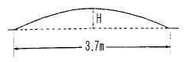
- 4.8cm
- 8.2cm
- 10.2cm
- 12.8cm
(정답률: 59%)
117. 운전자의 정보처리 과정에서 지각, 식별, 행동판단 과정을 합해서 무슨 과정이라 하는가?
- 반사과정
- 인지과정
- 처리과정
- 관리과정
(정답률: 알수없음)
118. 차량운행시 차도를 이탈한 차량의 충돌위험을 방지할 수 있도록 권장되는 차로면 장애물 제거거리는?
- 6.1m
- 9.1m
- 12.1m
- 15.1m
(정답률: 알수없음)
119. 사고경험에 기초한 위험지점 선정을 위한 기법중 소도읍의 가로망, 대도시의 지역가로망 및 교통량이 적은 지방부도로에 효과적으로 사용되는 가장 단순하고 가장 직접적인 접근 기법은?
- 사고건수-율법
- 사고율법
- 율-품질관리법
- 사고건수법
(정답률: 알수없음)
120. 개별적 사고의 분석을 위해 사고분석 과정을 5단계로 나누었을때 순서가 적절한 것은?
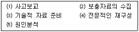
- ⑴ - ⑶ - ⑵ - ⑷ - ⑸
- ⑴ - ⑵ - ⑶ - ⑷ - ⑸
- ⑴ - ⑶ - ⑵ - ⑸ - ⑷
- ⑴ - ⑸ - ⑵ - ⑶ - ⑷
(정답률: 34%)